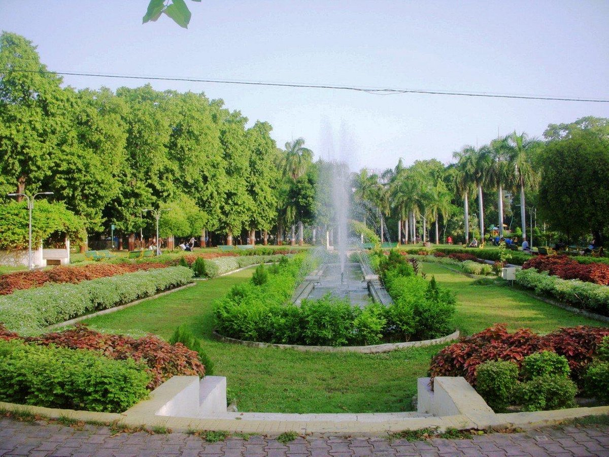

Sayaji Baug, also known as Kamati Baug, is a massive green square in the middle of the town, which houses the famous Museum and Picture Gallery, and other kid-friendly sights like an aquarium, zoo, health museum, planetarium, a toy train and a flowerbed clock. The Baroda Museum & Picture Gallery is home to a diverse collection of art, much of it gathered by Maharaja Sayajirao III, including statues and carvings from several Asian regions, fine ivory carvings from India, Japan and China, a modest Egyptian room with a mummy and an entire floor of stuffed and pickled wildlife specimens. The gallery has lovely Mughal miniatures and a motley crew of European masters. This is the largest public garden in the western part of the country, sprawled over 113 acres. Over 96 species of trees and a small zoo make this an interesting place for nature lovers.
Brief History
It was Maharaja Sayaji Rao Gaekwad III that built the Kamati Baug (or Sayaji Baug) in 1879 for the citizens of Baroda. It was constructed on the banks of River Vishwamitri as a beautiful backdrop to the greenery, museums and galleries.

How to Get There?
By Road
NH8 passes through Baroda, making it well connected by road as well.
By Train
The city lies on the busy Mumbai-Delhi Western Railway Mainline and is well connected by premium trains like Shatabdi and Rajdhani.
By Air
Domestic flights connect Vadodara (BDQ) to major cities in India.